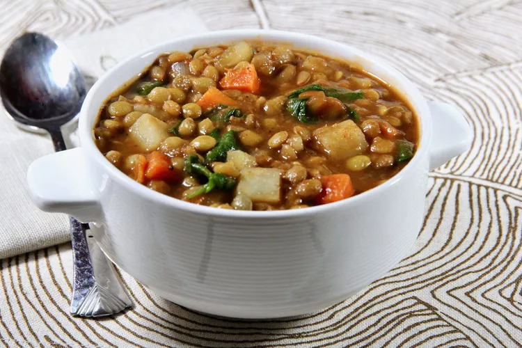

Odin recipes
Lentil Soup

How to Cook Lentils on the Stove
This classic method doesn't require any fancy gadgets. Here's how you do it:
Rinse. Place the lentils in a strainer and pick out any debris or shriveled lentils. Thoroughly rinse under running water.
Boil. Combine 3 cups of liquid (water, broth, etc.) with 1 cup of dried lentils in a saucepan. Add seasonings such as garlic or bay leaves (but don't add salt yet), and bring to a boil.
Simmer. Reduce heat to low and cover. Let the lentils simmer until they're soft but not falling apart. Refer to cooking times below for how long to cook each type of lentil.
Strain. Strain lentils and return them to the pan and salt to taste. And there you have it!
Stovetop Lentil Cooking Times:
15 to 20 minutes: Red lentils, yellow lentils
20 to 25 minutes: Black lentils
20 to 30 minutes: Brown lentils, green lentils
How Long to Cook Lentils in the Instant Pot
If you're lucky enough to have an Instant Pot, you know it makes everything easier to cook, including lentils. Here's how you do it:
Rinse. Place the lentils in a strainer and pick out any debris or shriveled lentils. Thoroughly rinse under running water.
Cook. Combine 2 cups of liquid for every 1 cup of dried lentils in the inner pot. Season as you like (try adding garlic and bay leaves for added flavor). Turn the pressure valve to the sealing position and cook on high pressure. Refer to cooking times below for how long to cook each type of lentil in the Instant Pot.
Release pressure. Once the timer is up, allow a natural pressure release for 10 minutes. Then turn the pressure valve to the venting position to quickly release the remainder of the pressure.
Stir. Open the lid and stir the lentils. Note there will be some extra liquid — allow the lentils to soak it up as you stir and serve.
Instant Pot Lentil Cooking Times:
1-2 minutes: Red lentils, yellow lentils
6-7 minutes: Black lentils
8-10 minutes: Brown lentils, green lentils
Home